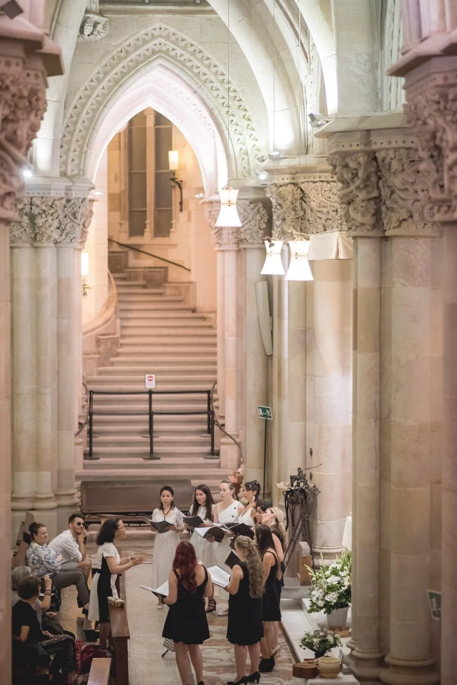
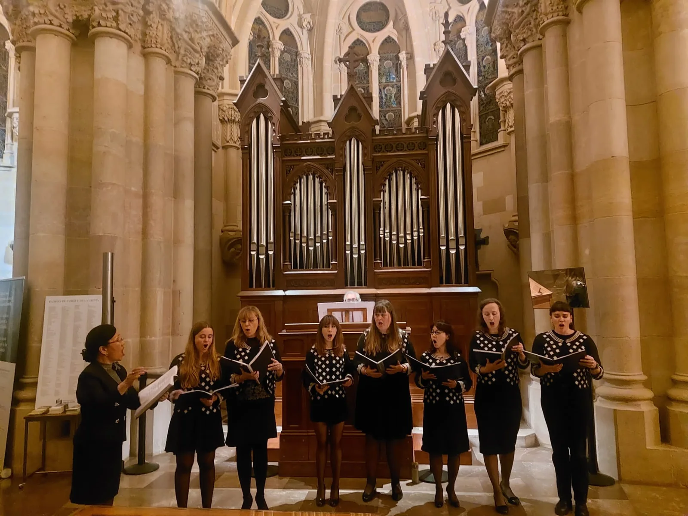
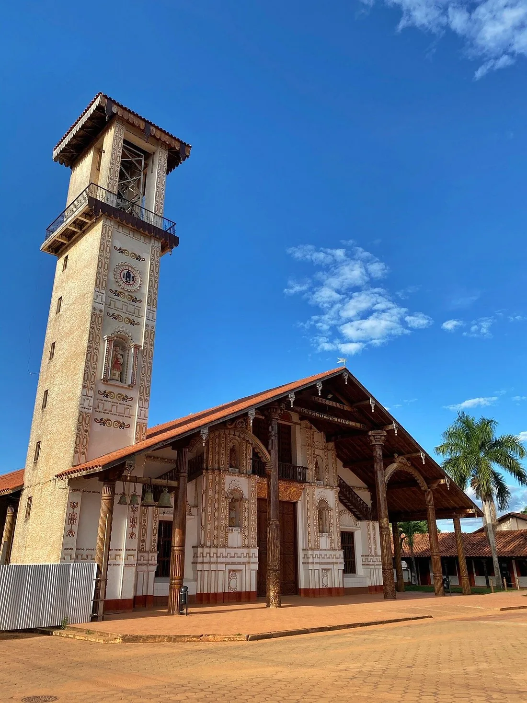
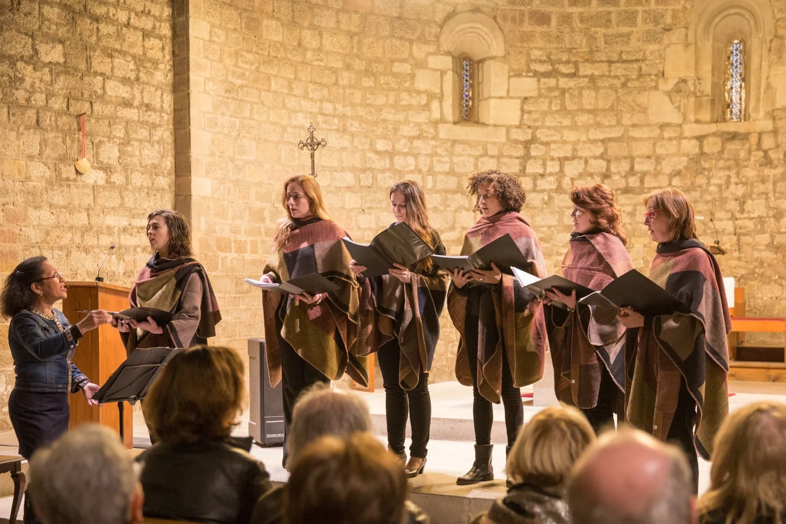

Grup de cambra · Barcelona
L’Amèrica musical
Música del Nou Món, dels segles XVI al XVIII, cantada avui a Barcelona: la música del Nou Món per a Aquest Món.
Un grup de cambra
Una idea del 2013, per cantar Amèrica
El 2013 la Carmen va iniciar la formació d’un grup de cambra per interpretar obres d’Amèrica: tradicionals de cada país del continent i barroques del centre i del sud.
Així va néixer Cantoría Re-Quinto. La Carmen va triar el nom per un instrument present en tots els països d’Amèrica: el requint, que a més, en pronunciar-lo, porta «al quinto re», un so molt preuat per qualsevol solista.

Història
Música que es va amagar per sobreviure
Una història en vuit capítols: des dels òrgans de les catedrals fins a una paret que es va tirar a terra a Bolívia i guardava 5.000 partitures.
-

Cantoría Re-Quinto davant l’orgue Capítol 1Els organistes creuen l’oceà
Durant el període colonial i d’evangelització, entre els segles XVI i XVIII, grans compositors europeus van embarcar cap al Nou Món: el Perú, Mèxic, Bolívia, Guatemala… Anaven com a organistes de catedrals.
No hi venien de pas. S’asseien a l’orgue de temples acabats d’aixecar, en ciutats on la litúrgia es cantava cada dia i on ja vivien pobles amb la seva pròpia música.
-

Església de Chiquitos, Bolívia Capítol 2Dos mons, fúria i amagatall
Hi va haver intercanvis musicals amb els pobles nadius. Ells ja tenien les seves maneres de fer música, i els músics europeus les van escoltar, les van barrejar i les van portar a la litúrgia.
D’aquell encontre van néixer moltes obres de caràcter litúrgic escrites en llengües autòctones: una música que existia perquè dos mons havien començat a cantar junts.
Quan va caure el domini espanyol, els músics estrangers van tornar als seus països. Les obres es van quedar aquí, i també es van quedar les persones que les havien cantat.
Els pobles nadius, enfurismats per la repressió viscuda, es van dirigir a destruir i cremar tot el que simbolitzava el jou espanyol. El que cremava era allò que representava la dominació.
Capellans, fiscals i persones cultes dels pobles van veure que aquella música corria perill. I van començar a amagar-la de diverses maneres: en cofres, darrere de murs, fins i tot a casa seva.
Amagar una partitura era un acte de protecció. Ningú sabia quant duraria la tempesta, però sabien que aquell llegat no es podia perdre.
-

Cantoría Re-Quinto en escena Capítol 3Distància, silenci i una paret
Els pobles enfurismats van arribar amb rapidesa a les catedrals dels països amb bones carreteres entre ciutats, com Veneçuela, Colòmbia, Argentina i Brasil. Per això, en aquests països es va conservar poc material o gairebé res.
En canvi, a Bolívia, Guatemala, l’Equador i el Paraguai no hi havia camins fàcils. S’hi arribava a cavall, després en ase i finalment a peu: un viatge d’uns dos mesos. Aquell temps és el que van tenir fiscals i persones cultes per protegir la música.
I la música va esperar. Durant segles, dins de parets que ningú no obria.
Ja als anys setanta van començar les remodelacions de temples religiosos. Obres que tocaven murs antics, sense saber encara el que guardaven.
A la província de Chiquitos, a Bolívia, els arquitectes van tirar a terra la paret d’un temple que no corresponia a l’arquitectura de la resta de l’edifici.
Darrere hi van trobar unes 5.000 partitures amagades. I damunt del material hi havia un missatge escrit que n’explicava les raons.
-

Il·lustració creada amb IA Capítol 4Avui, a Barcelona
El 2013 la Carmen va començar a formar un grup de cambra per portar aquella música als escenaris: Cantoría Re-Quinto. Avui canta les partitures que van sobreviure amagades, en la seva llengua original i amb l’harmonització de l’època.
A Barcelona, és l’únic cor que canta aquest repertori.

Aquesta és la música que presento al món a través d’aquest grup de cambra: l’Amèrica musical de mitjan segle XVI al XVIII. La música del Nou Món per a Aquest Món.Carmen Moreno
El que canta avui
Concerts de Cantoría Re-Quinto
- 2019 · Primer concert de música llatinoamericana barroca i tradicional.
- 11 de novembre de 2023 · Basílica i Cripta de la Sagrada Família, amb el Psalmus 6 d’Hernando Franco (Puebla, 1611), davant els cònsols de l’Equador i de Mèxic.
- 2 de maig de 2024 · Jardí del Silenci, a l’aire lliure, amb els ocells com a inesperats cantaires.
- 2025 i 2026 · Basílica i Cripta de la Sagrada Família, Temple Maria Mitjancera de Totes les Gràcies i Temple Crist Rei, col·laborant a més amb l’Associació Cor Cremat.
Galeria
Cantoría Re-Quinto, a escena
Fotografies de l’arxiu de la Carmen. Prem-ne qualsevol per ampliar-la.

La teva primera classe
La teva veu és ideal per cantar? T’ensenyaré com.
Explica’m el teu objectiu, projecte o intenció amb el cant; acordem una línia de treball vocal i seleccionem l’horari convenient, en línia o presencial, aquí, a Barcelona.